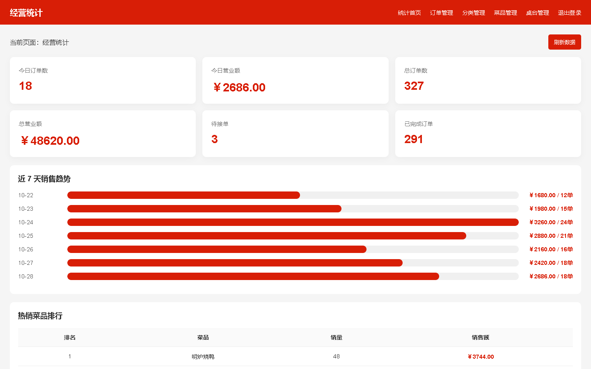
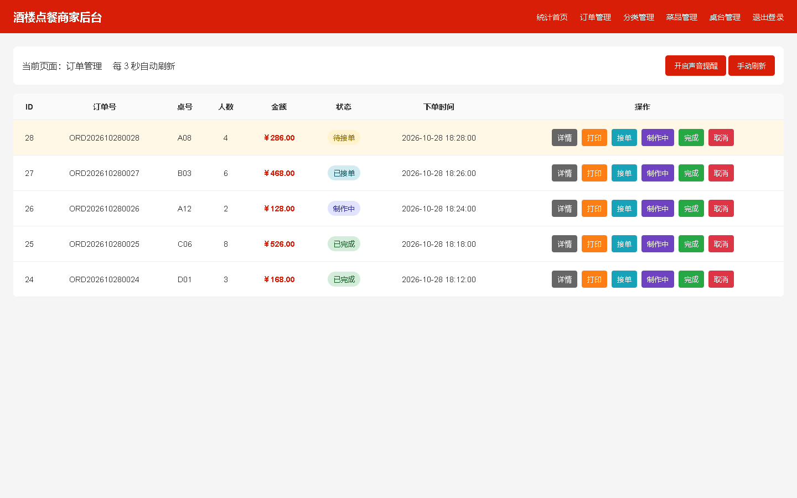
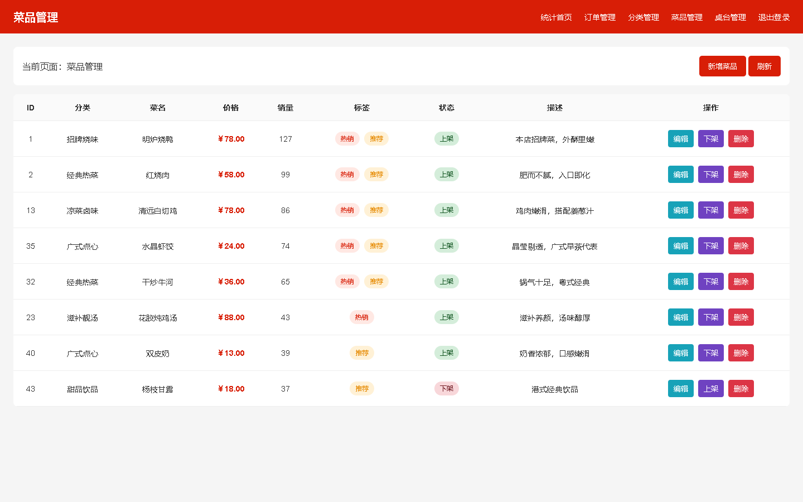
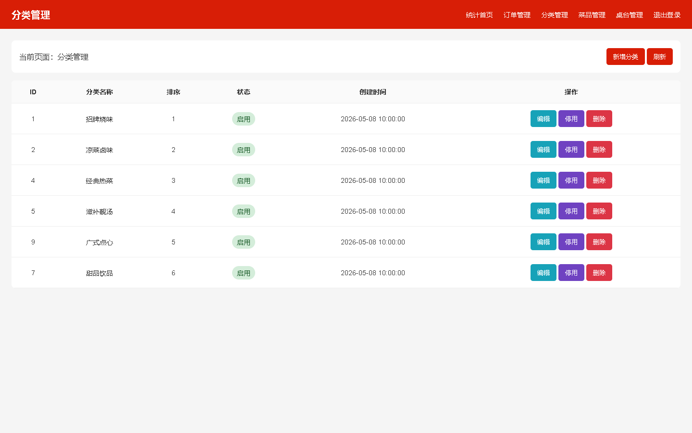
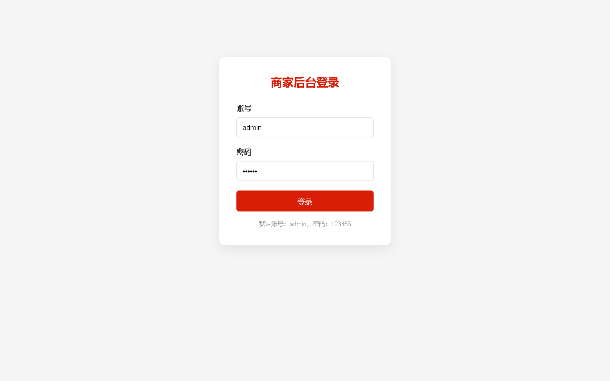

RESTAURANT ORDERING SYSTEM
项目真实前端页面
运行效果展示
以下截图均由本仓库中的真实 HTML、CSS 和 JavaScript 页面运行后截取，没有使用图像生成模型，也没有重新绘制成概念界面。
✓
真实页面运行截图
页面来源：admin-web/*.html
运行方式：浏览器加载项目页面与演示数据
截图日期：2026-10-28
ACTUAL FRONTEND CAPTURES
Web 商家后台真实运行页面
图片内容来自当前项目源文件，不是效果图。点击图片可查看原始尺寸。

01经营统计
admin-web/dashboard.html
02订单管理
admin-web/orders.html
03菜品管理
admin-web/dishes.html
04分类管理
admin-web/categories.html
05商家登录
admin-web/login.htmlIMPLEMENTED FEATURES
当前项目已经实现的功能
数据看板
今日订单、营业额、累计统计、七日销售趋势与热销排行。
订单流转
待接单、已接单、制作中、已完成、取消以及订单打印。
菜品维护
新增、编辑、上下架、删除、图片上传和热销推荐标签。
分类与桌台
菜品分类排序和状态维护，餐桌编号及启停管理。
WECHAT MINIPROGRAM
微信小程序真实源码页面
GitHub Pages 无法直接运行微信小程序容器，因此这里不放模拟截图；请使用微信开发者工具打开 miniprogram 目录查看真实运行效果。